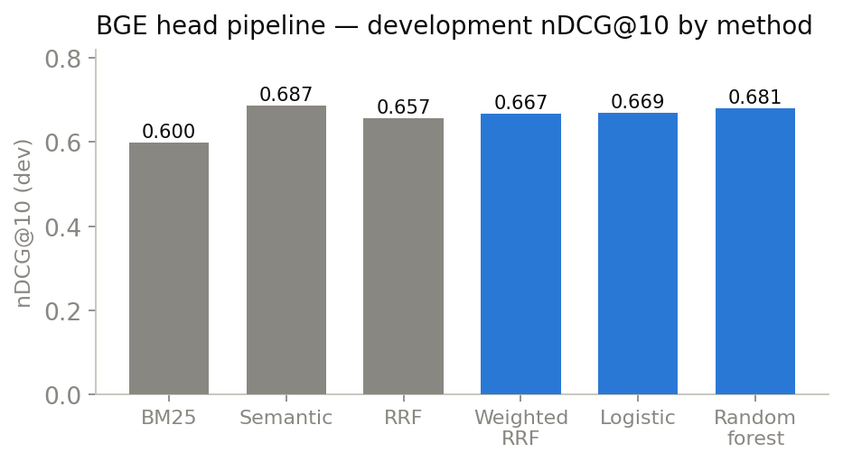
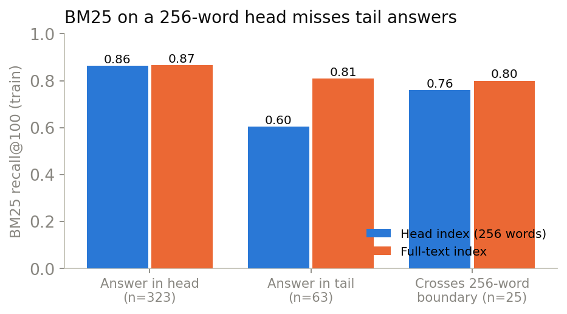
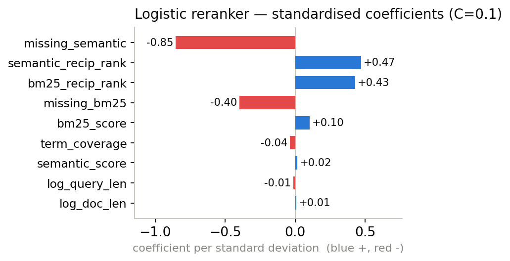
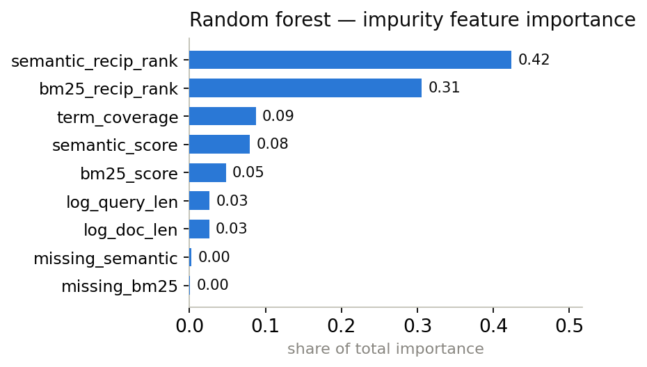
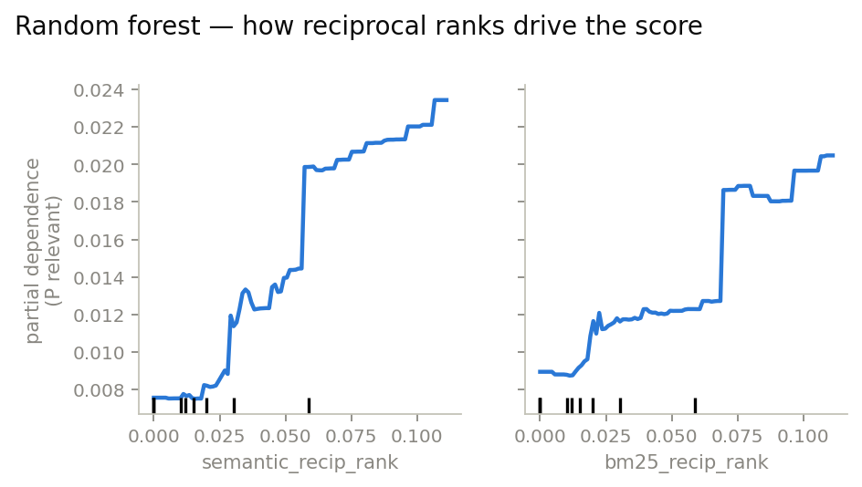

| Member | UID | Member | UID |
|---|---|---|---|
| HU Yuyi | 60159701 | Tang Yuhe | 61034951 |
| Wang Xin | 61023715 | Wang Chensu | 60979223 |
| QUE Shenyun | 60269510 |
| Cleaning / split step | Count |
|---|---|
| Raw archive documents | 28,481 |
| After exact-body de-duplication | 28,478 |
| Canonical questions | 581 |
| After quarantining 1 cross-split component (3 questions) | 578 |
| Train / Dev / Test questions | 410 / 84 / 84 |
| Dev independent components | 72 |



| Method | Key hyper-parameters | Dev nDCG@10 | Test nDCG@10 | Test Recall@20 | Online median (ms) |
|---|---|---|---|---|---|
| BM25 | k1 = 1.2, b = 0.75 | 0.600 | 0.510 | 0.655 | 5.7 |
| Dense (BGE) | bge-small-en-v1.5, 512 tok | 0.687 | 0.578 | 0.750 | 66.5 |
| RRF | k = 10 | 0.657 | 0.554 | 0.726 | 71.4 |
| Weighted RRF | k = 10, semantic weight = 2.0 | 0.667 | 0.585 | 0.726 | 71.1 |
| Logistic | C = 0.1 | 0.669 | 0.579 | 0.738 | 69.8 |
| Random forest | depth 12, min-leaf 10, 200 trees | 0.681 | 0.590 | 0.738 | 91.2 |


| Check | What changed | Result (dev nDCG@10 vs main line) | Conclusion holds? |
|---|---|---|---|
| Negative cap | 50 → 10 proxy negatives / query | Logistic −0.004 [−0.014, +0.001]; RF +0.010 [−0.004, +0.026] | Yes |
| Class balance | equal positive/negative weight | Logistic −0.007; RF −0.004 (CIs cross 0) | Yes |
| Training seed | 20261114 → …15 / …16 | |Δ| ≤ 0.011, every CI crosses 0 | Yes |
| Feature set | rank features only (drop raw scores) | Logistic +0.001; RF −0.014 | Yes |
| Negative sampling | random → hardest-BM25 negatives | Logistic −0.608; RF −0.665 — collapses | No |